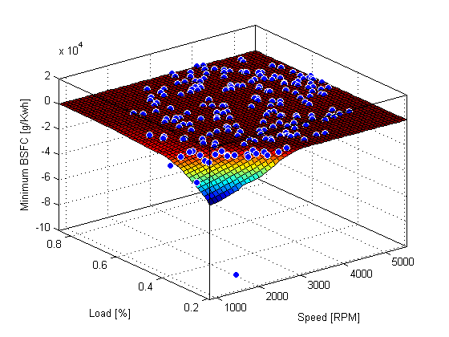
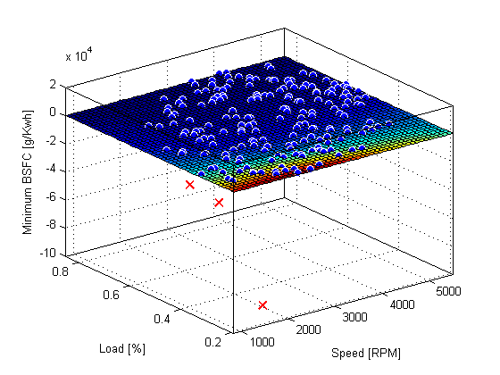
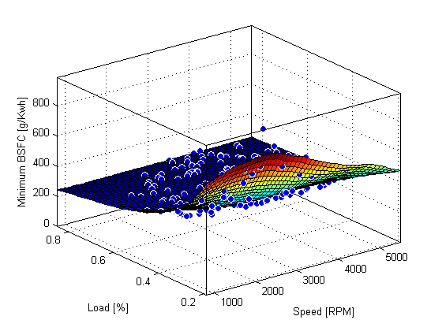
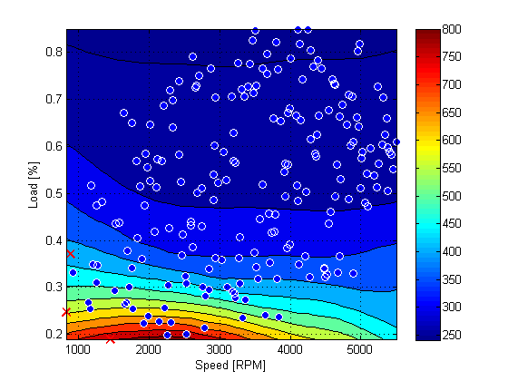
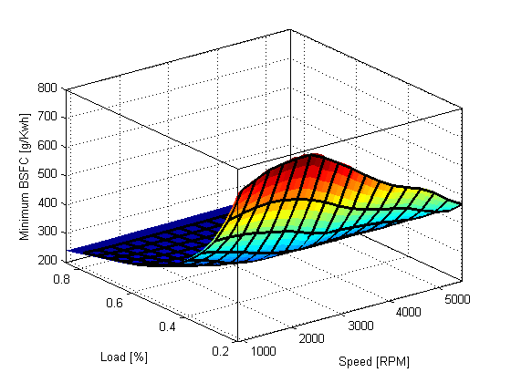
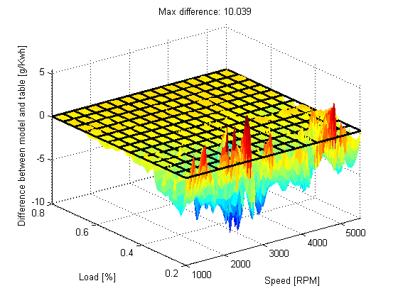

Fit Smooth Surfaces To Investigate Fuel Efficiency
This example shows how to use Curve Fitting Toolbox™ to fit a response surface to some automotive data to investigate fuel efficiency.
The toolbox provides sample data generated from a GTPOWER predictive combustion engine model. The model emulates a naturally aspirated spark-ignition, 2-liter, inline 4-cylinder engine. You can fit smooth lowess surfaces to this data to find minimum fuel consumption.
The data set includes the required variables to model response surfaces:
- Speed is in revolutions per minute (rpm) units.
- Load is the normalized cylinder air mass (the ratio of cylinder aircharge to maximum naturally aspirated cylinder aircharge at standard temperature and pressure).
- BSFC is the brake-specific fuel consumption in g/KWh. That is, the energy flow in, divided by mechanical power out (fuel efficiency).
The aim is to model a response surface to find the minimum BSFC as a function of speed and load. You can use this surface as a table, included as part of a hybrid vehicle optimization algorithm combining the use of a motor and your engine. To operate the engine as fuel efficiently as possible, the table must operate the engine near the bottom of the BSFC bowl.
Contents
Load and Preprocess Data
Load the data from the XLS spreadsheet. Use the 'basic' command option for non-Windows® platforms.
Create a variable n that has all the numeric data in one array.
n = xlsread( 'Engine_Data_SI_NA_2L_I4.xls', 'SI NA 2L I4', '', 'basic' );
Extract from the variable n the columns of interest.
SPEED = n(:,2); LOAD_CMD = n(:,3); LOAD = n(:,8); BSFC = n(:,22);
Process the data before fitting, to pick out the minimum BSFC values from each sweep. The data points are organized in sweeps on speed/load.
Get a list of the speed/load sites:
SL = unique( [SPEED, LOAD_CMD], 'rows' );
nRuns = size( SL, 1 );
For each speed/load site, find the data at the site and extract the actual measured load and the minimum BSFC.
minBSFC = zeros( nRuns, 1 ); Load = zeros( nRuns, 1 ); Speed = zeros( nRuns, 1 ); for i = 1:nRuns idx = SPEED == SL(i,1) & LOAD_CMD == SL(i,2); minBSFC(i) = min( BSFC(idx) ); Load(i) = mean( LOAD(idx) ); Speed(i) = mean( SPEED(idx) ); end
Fit a Surface
Fit a surface of fuel efficiency to the preprocessed data.
f1 = fit( [Speed, Load], minBSFC, 'Lowess', 'Normalize', 'on' )
Locally weighted smoothing linear regression:
f1(x,y) = lowess (linear) smoothing regression computed from p
where x is normalized by mean 3407 and std 1214
and where y is normalized by mean 0.5173 and std 0.1766
Coefficients:
p = coefficient structure
Plot Fit
plot( f1, [Speed, Load], minBSFC ); xlabel( 'Speed [RPM]' ); ylabel( 'Load [%]' ); zlabel( 'Minimum BSFC [g/Kwh]' );
Remove Problem Points
Review the resulting plot.
There are points where BSFC is negative because this data is generated by an engine simulation.
Remove those problem data points by keeping points in the range [0, Inf].
out = excludedata( Speed, minBSFC, 'Range', [0, Inf] ); f2 = fit( [Speed, Load], minBSFC, 'Lowess', ... 'Normalize', 'on', 'Exclude', out )
Locally weighted smoothing linear regression:
f2(x,y) = lowess (linear) smoothing regression computed from p
where x is normalized by mean 3443 and std 1187
and where y is normalized by mean 0.521 and std 0.175
Coefficients:
p = coefficient structure
Plot the new fit. Note that the excluded points are plotted as red crosses.
plot( f2, [Speed, Load], minBSFC, 'Exclude', out ); xlabel( 'Speed [RPM]' ); ylabel( 'Load [%]' ); zlabel( 'Minimum BSFC [g/Kwh]' );
Zoom In
Zoom in on the part of the z-axis of interest.
set( gca, 'ZLim', [0, max( minBSFC )] );
 You want to operate the engine efficiently, so create a contour plot to see the region where the BSFC is low. Use the plot function, and specify the name/value parameter pair 'style','Contour'.
plot( f2, [Speed, Load], minBSFC, 'Exclude', out, 'Style', 'Contour' ); xlabel( 'Speed [RPM]' ); ylabel( 'Load [%]' ); colorbar
Create a Table from the Surface
Generate a table by evaluating the model f2 over a grid of points.
Create variables for the table breakpoints.
speedbreakpoints = linspace( 1000, 5500, 17 ); loadbreakpoints = linspace( 0.2, 0.8, 13 );
To generate values for the table, evaluate the model over a grid of points.
[tSpeed, tLoad] = meshgrid( speedbreakpoints, loadbreakpoints ); tBSFC = f2( tSpeed, tLoad );
Examine the rows and columns of the table at the command line.
tBSFC(1:2:end,1:2:end)
ans = Columns 1 through 7 722.3280 766.7608 779.4296 757.4574 694.5378 624.4095 576.5235 503.9880 499.9201 481.7240 458.2803 427.7338 422.1099 412.1624 394.7579 364.3421 336.1811 330.1550 329.1635 328.1810 329.1144 333.7740 307.7736 295.1777 291.2068 290.3637 290.0173 287.8672 295.9729 282.7567 273.8287 270.8869 269.8485 271.0547 270.5502 273.7512 264.5167 259.7631 257.9215 256.9350 258.3228 258.6638 251.5652 247.6746 247.2747 247.4699 247.3570 248.2433 248.8139 Columns 8 through 9 532.1533 466.9610 396.3209 398.0199 335.3871 346.3882 286.3077 291.0075 269.6837 272.2054 258.0298 260.5269 249.0083 250.4165
Plot the Table Against the Original Model
The grid on the model surface shows the table breakpoints.
h = plot( f2 ); set( h, 'EdgeColor', 'none' ); hold on mesh( tSpeed, tLoad, tBSFC, ... 'LineStyle', '-', 'LineWidth', 2, 'EdgeColor', 'k', ... 'FaceColor', 'none', 'FaceAlpha', 1 ); hold off xlabel( 'Speed [RPM]' ); ylabel( 'Load [%]' ); zlabel( 'Minimum BSFC [g/Kwh]' );
Check the Table Accuracy
View the difference between the model and the table by plotting the difference between them on a finer grid. Then, use this difference in prediction accuracy between the table and the model to determine the most efficient table size for your accuracy requirements.
The following code evaluates the model over a finer grid and plots the difference between the model and the table.
[tfSpeed, tfLoad] = meshgrid( ... linspace( 1000, 5500, 8*17+1 ), ... linspace( 0.2, 0.8, 8*13+1 ) ); tfBSFC_model = f2( tfSpeed, tfLoad ); tfBSFC_table = interp2( tSpeed, tLoad, tBSFC, tfSpeed, tfLoad, 'linear' ); tfDiff = tfBSFC_model - tfBSFC_table; surf( tfSpeed, tfLoad, tfDiff, 'LineStyle', 'none' ); hold on mesh( tSpeed, tLoad, zeros( size( tBSFC ) ), ... 'LineStyle', '-', 'LineWidth', 2, 'EdgeColor', 'k', ... 'FaceColor', 'none', 'FaceAlpha', 1 ); hold off axis tight xlabel( 'Speed [RPM]' ); ylabel( 'Load [%]' ); zlabel( 'Difference between model and table [g/Kwh]' ); title( sprintf( 'Max difference: %g', max( abs( tfDiff(:) ) ) ) );
Create a Table Array Including Breakpoint Values
After creating a table by evaluating a model fit over a grid of points, it can be useful to export your table data from MATLAB. Before exporting, create a table array that includes the breakpoint values in the first row and column. The following command reshapes your data to this table format:
- X (speedbreakpoints) is a (1 x M) vector
- Y (loadbreakpoints) is an (N x 1) vector
- Z (tBSFC) is an (M x N) matrix
table = [
{'Load\Speed'}, num2cell(speedbreakpoints(:).' )
num2cell(loadbreakpoints (:) ), num2cell( tBSFC )
];
Export Table to Spreadsheet File
You can use the xlswrite function to export your table data to a new Excel Spreadsheet. Execute the following command to create a spreadsheet file.
xlswrite( 'tabledata.xlsx', table )
Create a Lookup Table Block
If you have Simulink™ software, you can create a Look Up Table block as follows. Execute the following code to try it out.
1. Create a model with a 2-D Lookup Table block.
simulink new_system( 'my_model' ) open_system( 'my_model' ) add_block( 'Simulink/Lookup Tables/2-D Lookup Table', 'my_model/surfaceblock' )
2. Populate the Lookup Table with speed breakpoints, load breakpoints, and a lookup table.
set_param( 'my_model/surfaceblock',... 'BreakpointsForDimension1', 'loadbreakpoints',... 'BreakpointsForDimension2', 'speedbreakpoints',... 'Table', 'tBSFC' );
3. Examine the populated Lookup Table block.